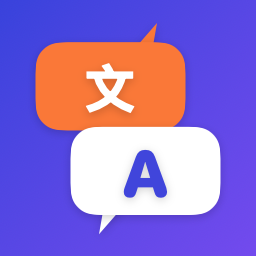

Privacy Policy
Last updated: October 12, 2026
Your conversations stay on your iPhone
Table Talk ("the app") is made by HRS Studio. This policy explains what data the app processes and why.
Speech and text
Speech recognition uses Apple's Speech framework with on-device recognition only. Translation uses Apple's on-device Translation framework. Audio, recognized text and translations are processed on your device and are never sent to us or to any third-party server. Conversations are kept in memory while the app is open and are not stored after you clear them or close the app.
Language downloads
Language packs are downloaded by iOS from Apple when you first use a language pair. This download is handled by Apple and is subject to Apple's Privacy Policy.
Purchases
The one-time "Table Talk Pro" purchase is processed by Apple. To verify the purchase and restore it on your devices, the app uses RevenueCat, Inc., which receives an anonymous app user ID, the purchase receipt (product, price, date, country) and basic device information (such as iOS version). This data is not linked to your identity and is not used for advertising or tracking. See RevenueCat's Privacy Policy.
What we don't do
- No account or sign-up
- No analytics or advertising SDKs
- No tracking across apps or websites
- No selling or sharing of personal data
Settings stored on your device
Your selected languages, display settings, saved phrases and the daily free-translation counter are stored locally on your device and are deleted when you delete the app.
Children
The app does not knowingly collect personal information from anyone, including children.
Your rights
Because we don't hold personal data about you, there is nothing for us to access, correct or delete. For purchase data held by RevenueCat or Apple, contact us and we will help with any request under the GDPR, KVKK or other applicable laws.
Contact
Questions: mrrasitsahin@icloud.com
Türkçe özet
Table Talk konuşmanızı ve çevirilerinizi yalnızca cihazınızda işler; ses ve metin hiçbir sunucuya gönderilmez. Tek seferlik satın alma Apple tarafından işlenir ve doğrulama için RevenueCat'e anonim bir kimlik ile satın alma bilgisi iletilir. Hesap, reklam veya takip yoktur.